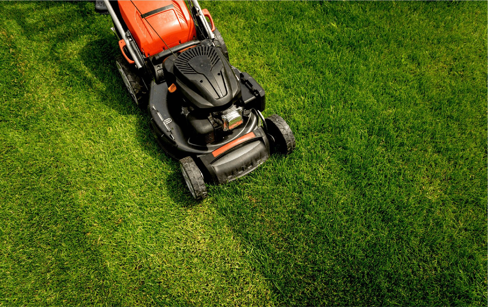
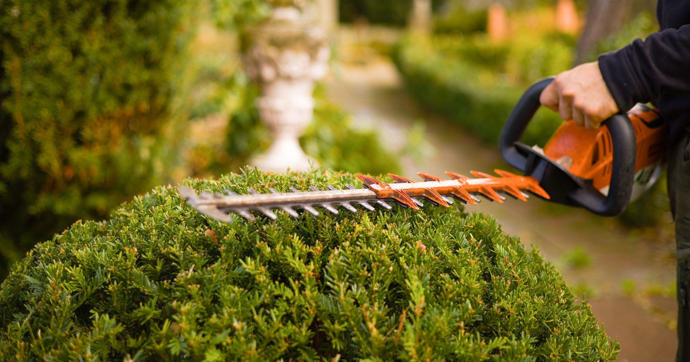
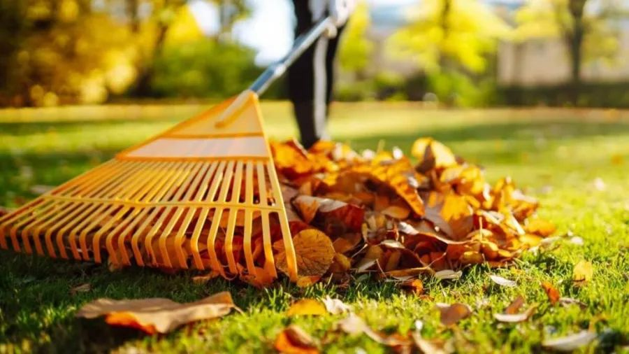
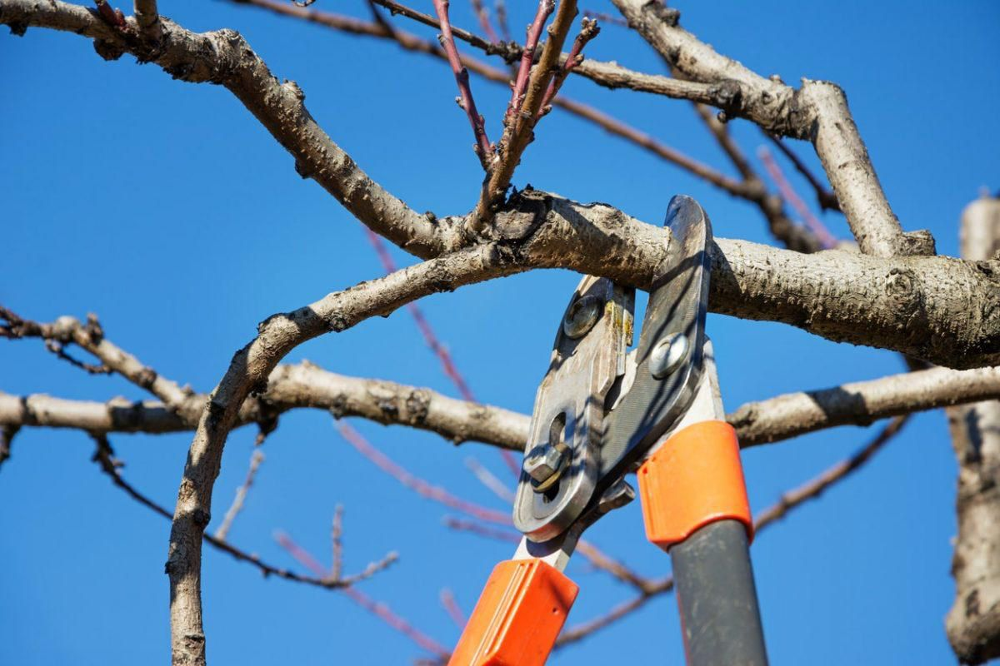

Unsere Leistungen
Rasenpflege
Professionelle Rasenbearbeitung, Düngung und Besprechung für einen grünen, dichten Rasen das ganze Jahr über.

Heckenschnitt
Präziser Heckenschnitt und Formgebung für einen gepflegten Außenbereich. Wir sorgen für saubere Schnitte und optimale Wuchsformen.

Gartenreinigung
Gründliche Reinigung und Entrümpelung Ihres Gartens. Wir schaffen saubere, gepflegte und nutzbaren Außenflächen.

Allgemeine Gartenpflege
Umfassende Gartenbetreuung: Schnitt, Pflanzenpflege, Unkrautbekämpfung und Instandhaltung für das ganze Jahr.

Baumschnitt
Fachgerechter Baumschnitt und Kronenpflege für Obstbäume, Ziergehölze und große Bäume nach fachlichen Standards.

Terrasse Hochdruckreinigung
Professionelle Reinigung von Terrassen mit Hochdruckreiniger. Wir entfernen Verschmutzungen, Algen und Moos für eine saubere und sichere Oberfläche.

Rasen Vertikutieren
Rasenbelüftung und Vertikutierung zur Verbesserung der Rasengesundheit. Wir entfernen Moos und Filz für einen besseren Wuchs und dichtere Grasnarbe.

Rasen Säen
Professionelle Rasenansaat und Nachsaat mit hochwertigem Saatgut. Wir bereiten den Boden vor und kümmern uns um die optimale Keimung für einen neuen, dichten Rasen.